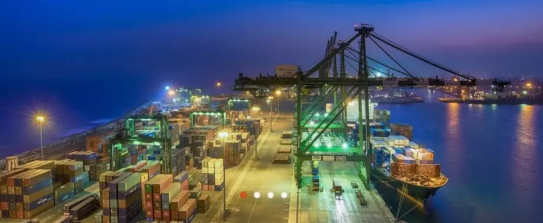
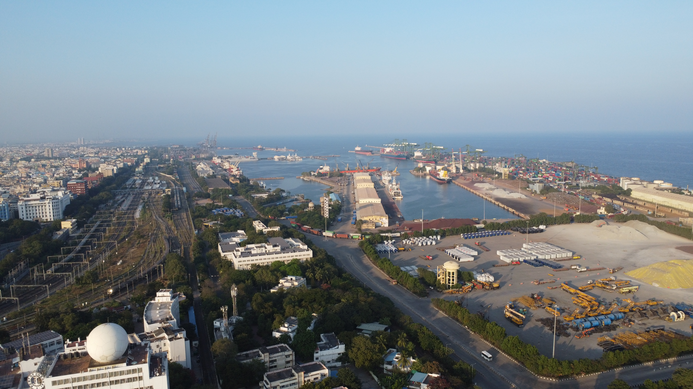
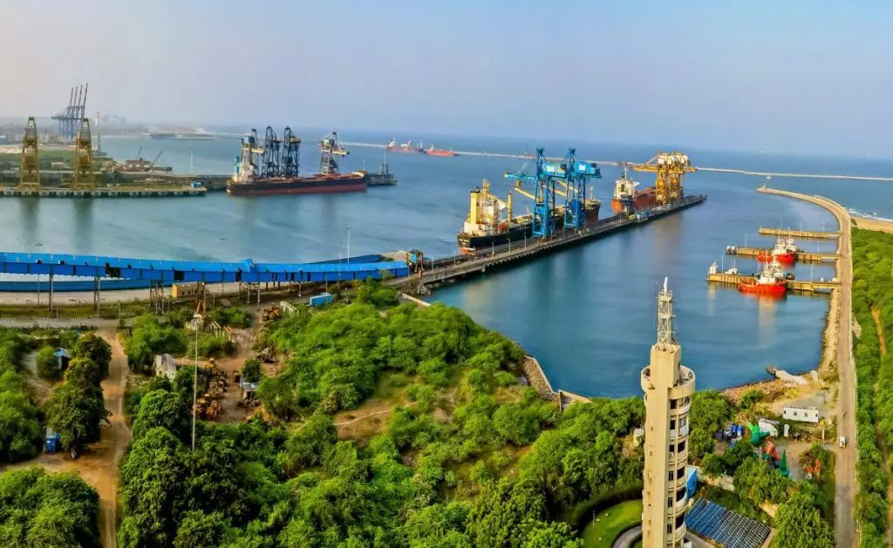
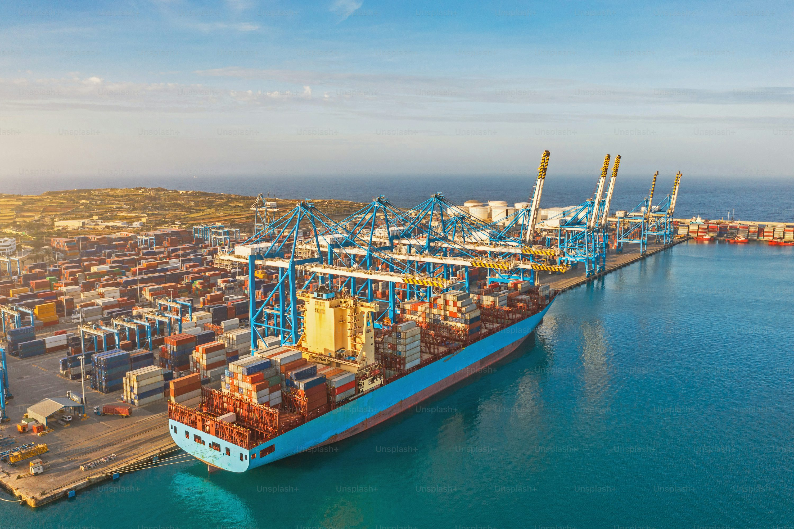
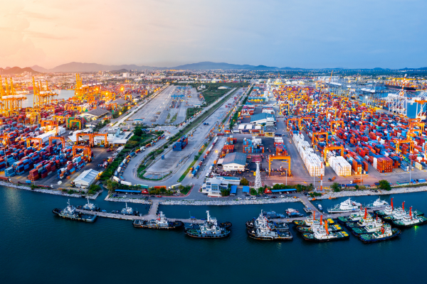
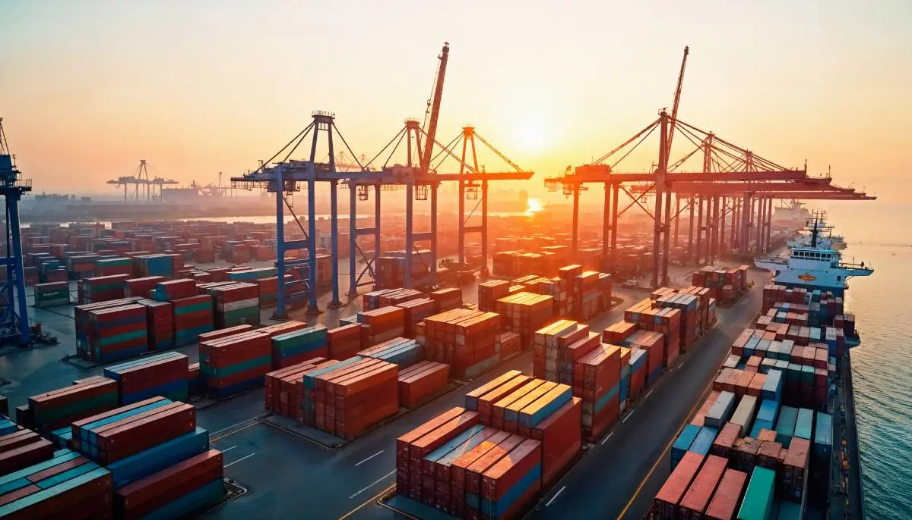
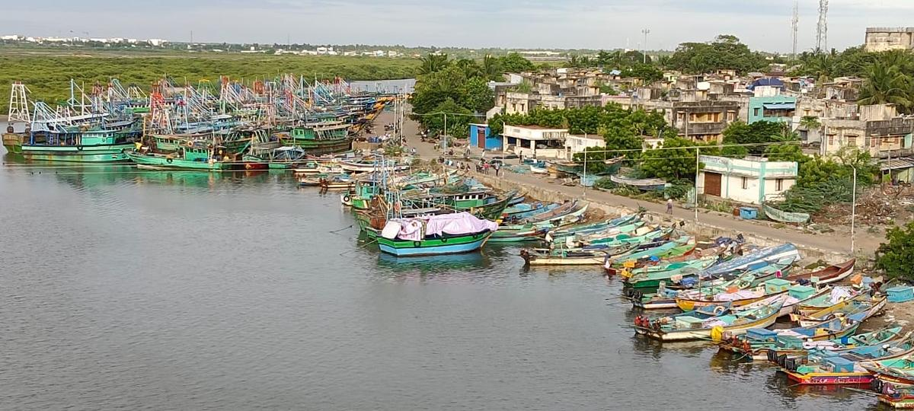
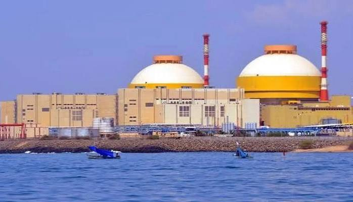
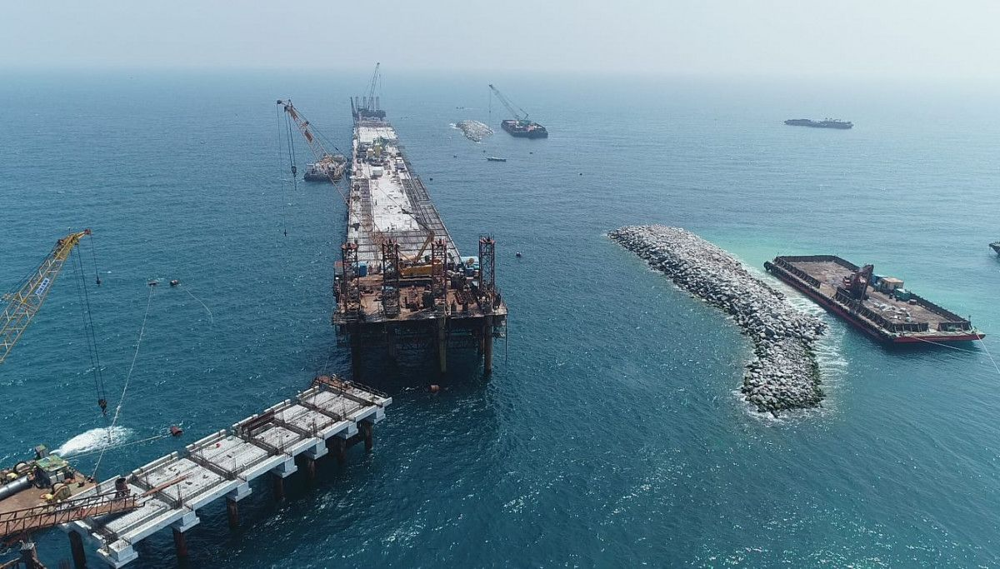

தமிழ்நாடு இந்தியாவின் முக்கிய கடல்சார் மாநிலங்களில் ஒன்றாகும். சுமார் 1,069 கி.மீ. நீளமான கடற்கரையைக் கொண்ட தமிழ்நாட்டில் மொத்தம் 20 செயல்பாட்டில் உள்ள துறைமுகங்கள் உள்ளன. இதில் 3 முக்கிய துறைமுகங்கள் இடம்பெற்றுள்ளன; இந்தியாவின் எந்த ஒரு மாநிலத்திலும் உள்ள அதிகபட்ச முக்கிய துறைமுகங்களின் எண்ணிக்கை இதுவாகும். இத்துறைமுகங்கள் வர்த்தகம், ஏற்றுமதி, இறக்குமதி மற்றும் சரக்கு போக்குவரத்தில் முக்கிய பங்கு வகிக்கின்றன.
தமிழ்நாட்டின் 1,069 கி.மீ. நீளமுள்ள கடற்கரையில் அமைந்துள்ள மொத்தம் 20 செயல்பாட்டில் உள்ள துறைமுகங்கள் மாநிலத்தின் கடல்சார் வணிகத்தைத் தாங்கி நிற்கின்றன.
சென்னை, காமராஜர் (எண்ணூர்), மற்றும் வ.உ. சிதம்பரனார் (தூத்துக்குடி) துறைமுகங்கள்.
காட்டுப்பள்ளி, கடலூர், நாகப்பட்டினம், குடங்குளம், உடன்குடி உள்ளிட்ட 17 சிறு துறைமுகங்கள்.
இந்தியாவின் 2-வது மிக நீண்ட கடற்கரையைக் கொண்ட முதன்மை கடல்சார் மாநிலம்.
உலக நாடுகளுடனும் இந்தியாவின் இதர கடலோர மாநிலங்களுடனும் வணிகப் பாதைகளை இணைக்கும் முதன்மை அமைப்பாகத் திகழ்கின்றன.
லட்சக்கணக்கான டன் எடையுள்ள கண்டெய்னர்கள் மற்றும் மொத்த சரக்குகளை அதிநவீன தொழில்நுட்பத்துடன் கையாளுகின்றன.
தமிழ்நாட்டின் ஆட்டோமொபைல், ஜவுளி, இயந்திரங்கள் மற்றும் விவசாய விளைபொருட்களின் சர்வதேச வர்த்தக நுழைவாயிலாக உள்ளன.
மின்சார உற்பத்தி நிலையங்களுக்கும் கனரக தொழிலகங்களுக்கும் தேவையான நிலக்கரி மற்றும் கனிமங்களைக் கையாளுதல்.
தொழிற்சாலைகளின் தொடர்ச்சியான இயங்குதளத்திற்குத் தேவையான கச்சா பொருட்கள் மற்றும் எரிபொருட்களை தடையின்றி விநியோகித்தல்.
கப்பல் கட்டும் தளம், பழுதுபார்ப்பு மற்றும் கடல்சார் வேலைவாய்ப்புகளை உருவாக்கி பொருளாதாரத்தை பலப்படுத்துதல்.
அனல் மின் நிலையங்கள் மற்றும் அணுமின் நிலையங்களுக்கான கனரக உபகரணங்கள் மற்றும் எரிபொருள் சரக்குகளைக் கொண்டு சேர்த்தல்.

சென்னை துறைமுகம் தமிழ்நாட்டின் முக்கியமான செயற்கை துறைமுகமாகும். கிழக்குக் கடற்கரையில் அமைந்துள்ள இது இந்தியாவின் பழமையான முக்கிய துறைமுகங்களில் ஒன்றாகும். கண்டெய்னர் மற்றும் பல்வேறு வகையான சரக்குகளைக் கையாள்வதில் முக்கிய பங்கு வகிக்கிறது.
பெரிய சரக்கு மற்றும் கண்டெய்னர் கப்பல்களைக் கையாளும் திறன் கொண்டது. இத்துறைமுகத்தின் சராசரி ஆழம் சுமார் 17 மீட்டர் ஆகும்.

காமராஜர் துறைமுகம் சென்னை துறைமுகத்திற்கு வடக்கே, எண்ணூரில் அமைந்துள்ளது. சென்னை துறைமுகத்தின் நெரிசலைக் குறைக்கும் நோக்கத்துடன் உருவாக்கப்பட்ட இது, நிலக்கரி மற்றும் பல்வேறு தொழில்துறை சரக்குகளைக் கையாளும் முக்கிய துறைமுகமாகும்.
இது இந்தியாவின் முதல் நிறுவனமயமாக்கப்பட்ட (Corporatised) முக்கிய துறைமுகம் என்ற பெருமையைப் பெற்றது. சென்னை துறைமுகத்திலிருந்து இதன் தூரம் சுமார் 18 கி.மீ. ஆகும்.

தூத்துக்குடியில் அமைந்துள்ள வ.உ. சிதம்பரனார் துறைமுகம் தமிழ்நாட்டின் தென்பகுதியில் உள்ள முக்கிய ஆழ்கடல் துறைமுகமாகும். மன்னார் வளைகுடாவிற்கு அருகில் அமைந்துள்ளதால் சர்வதேச கடல்வழி வர்த்தகத்தில் முக்கியத்துவம் பெறுகிறது.
இலங்கை மற்றும் தென்கிழக்கு ஆசியாவை நோக்கிய கடல்வழி வர்த்தகத்திற்கு முக்கிய நுழைவாயிலாகச் செயல்படுகிறது. இதன் துறைமுக ஆழம் சுமார் 12.8 மீட்டர் ஆகும்.
தமிழ்நாட்டில் உள்ள 17 சிறு துறைமுகங்கள் பல்வேறு வணிக, தொழில்துறை மற்றும் சிறப்பு பயன்பாடுகளுக்காக செயல்படுகின்றன. அவற்றுள் சில முக்கியமான சிறு துறைமுகங்கள் கீழே தொகுக்கப்பட்டுள்ளன:

சென்னையின் வடக்குப் பகுதியில் அமைந்துள்ள காட்டுப்பள்ளி துறைமுகம் நவீன வணிகத் துறைமுகமாகவும் கப்பல் கட்டுமான வளாகமாகவும் செயல்படுகிறது. கண்டெய்னர் மற்றும் மொத்த சரக்குகளைக் கையாளும் திறன் கொண்டது.

கடலூர் துறைமுகம் உப்பனாறு மற்றும் பரவனாறு ஆறுகள் சந்திக்கும் பகுதியில் அமைந்துள்ள திறந்த கடல் துறைமுகமாகும். கடலூர் மற்றும் சுற்றுப்புறப் பகுதிகளின் சரக்கு போக்குவரத்தில் முக்கிய பங்கு வகிக்கிறது.

நாகப்பட்டினம் துறைமுகம் நீண்டகால கடல்சார் வர்த்தக வரலாற்றைக் கொண்டது. சரக்கு மற்றும் பயணிகள் போக்குவரத்துடன் வரலாற்று முக்கியத்துவமும் பெற்றுள்ளது.

குடங்குளம் பகுதியில் உள்ள துறைமுக வசதிகள் அருகிலுள்ள மின் உற்பத்தித் திட்டங்களுக்குத் தேவையான பொருட்கள் மற்றும் சரக்குகளைக் கையாள்வதில் பயன்படுத்தப்படுகின்றன.

உடன்குடி பகுதியில் உள்ள துறைமுக வசதிகள் தொழில்துறை மற்றும் மின் உற்பத்தித் திட்டங்களுக்குத் தேவையான சரக்கு போக்குவரத்திற்குப் பயன்படுத்தப்படுகின்றன.
| துறைமுகம் | இடம் | வகை | முக்கியத்துவம் |
|---|---|---|---|
| சென்னை துறைமுகம் | சென்னை | முக்கிய துறைமுகம் | கண்டெய்னர் மற்றும் சரக்கு போக்குவரத்து |
| காமராஜர் துறைமுகம் | எண்ணூர், சென்னை | முக்கிய துறைமுகம் | நிலக்கரி மற்றும் தொழில்துறை சரக்குகள் |
| வ.உ. சிதம்பரனார் துறைமுகம் | தூத்துக்குடி | முக்கிய துறைமுகம் | கண்டெய்னர் மற்றும் மொத்த சரக்கு போக்குவரத்து |
| காட்டுப்பள்ளி துறைமுகம் | வட சென்னை | சிறு துறைமுகம் | கண்டெய்னர், சரக்கு மற்றும் கப்பல் கட்டுமானம் |
| கடலூர் துறைமுகம் | கடலூர் | சிறு துறைமுகம் | பிராந்திய சரக்கு போக்குவரத்து |
| நாகப்பட்டினம் துறைமுகம் | நாகப்பட்டினம் | சிறு துறைமுகம் | சரக்கு மற்றும் பயணிகள் போக்குவரத்து |
| குடங்குளம் துறைமுகம் | குடங்குளம் | சிறு துறைமுகம் | மின் உற்பத்தித் திட்ட தேவைகள் |
| உடன்குடி துறைமுகம் | உடன்குடி | சிறு துறைமுகம் | தொழில்துறை மற்றும் மின் உற்பத்தி தேவைகள் |